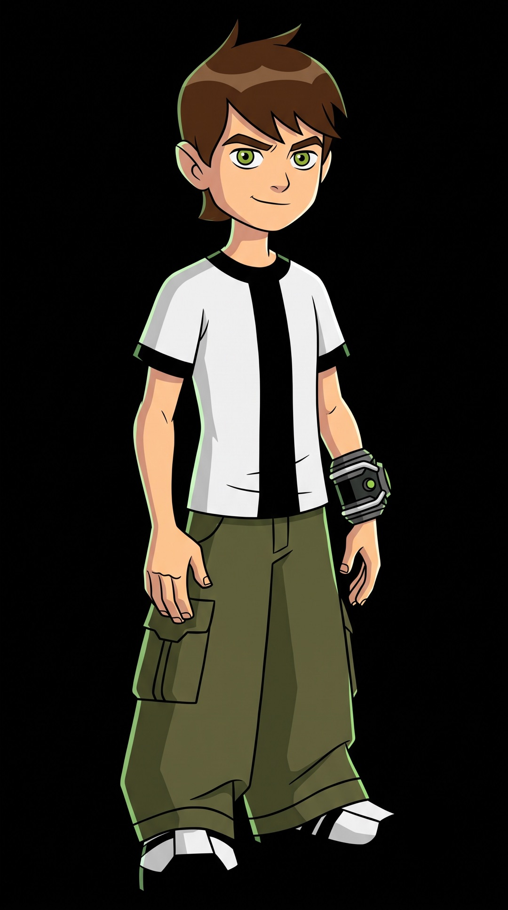

HERO TIME PROTOCOL INITIATED
THE WEAPON OF LEVEL 20 OMNITRIX
Created by Azmuth of Galvan Prime. Housing the genetic blueprints of 1,000,000+ extraterrestrial species.
SCROLL TO ACTIVATE

Created by Azmuth of Galvan Prime. Housing the genetic blueprints of 1,000,000+ extraterrestrial species.